08.04.2023
3. Окраска, шпаклевка, теплоизоляция
Окраска для стальной лодки – важнейший фактор защиты от коррозии. Верфь «Амета» рекомендовала специалиста по пескоструйке и окраске. Двухкомпонентный грунт Хемпель закуплен заранее. Процесс очистки ржавчины впечатлял красотой серой, матовой стали корпуса после прохождения струи песка. Очистка и окраска шла частями. Очищенный металл нельзя было оставлять неокрашенным даже на несколько часов. Влажность и кислород воздуха сразу накидывали легкую сетку ржавчины. Как выражался мастер-пескоструйщик «сталь уходит».
Снимаю шляпу перед работой мастера внутри лодки. Как он забирался со своим инструментом в укромные закутки форпика и ахтерпика, трудно представить. На лице противогаз, на теле плащ из материала типа брезента. Ни черта не видно, дышать нечем. Ему же предстояло быстро убрать песок изнутри и немедленно положить первый слой грунта. Короче, работенка еще та!
Это покрашенный ахтерпик. Видны трубы слива кокпита и оголовок баллера.
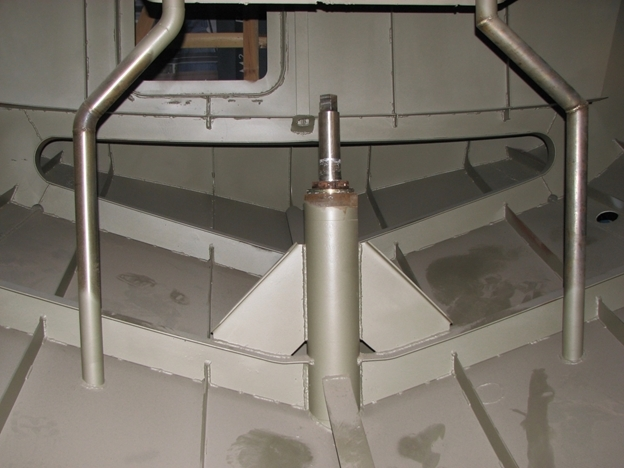
В дальнейшем мы пробовали окраску при помощи краскораспылителей и компрессора. Получалось неплохо, но приходилось сильно разводить густые грунты растворителем, что неправильно. Для таких красок нужен безвоздушный распылитель. Но купить как-то не решились. По большому счету, окраска валиком хоть и более трудоемка, но по качеству тоже хороша. В укромных местах выручала кисть. Кстати, удобно покупать грунт двух разных оттенков. При нанесении нескольких слоев понятно, где какой слой.
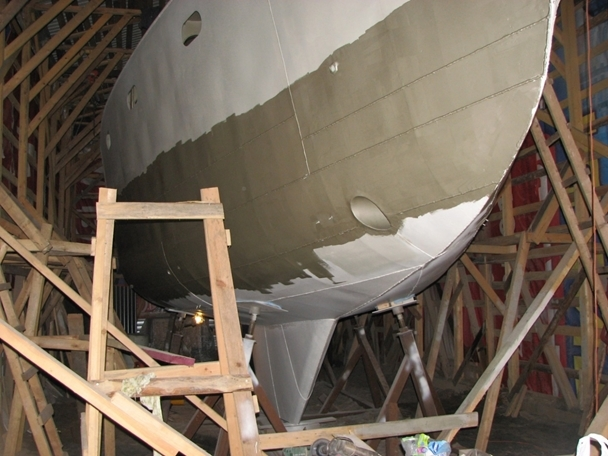
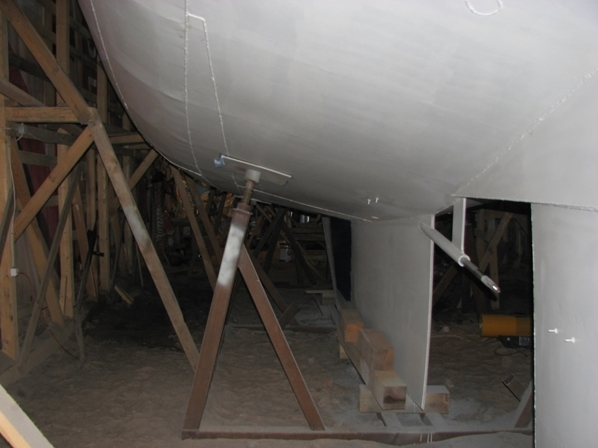
На подводный борт были положены 3-4 слоя двухкомпонентного грунта, а после получился большой перерыв до нанесения финишного покрытия. Необрастайкой красили уже незадолго до спуска. В спешке часть подводного корпуса не покрыли промежуточным грунтом, и необрастайка в дальнейшем сошла с окаменевшего за несколько лет грунта, как чулок. Необрастайка, кстати, долгоживущая.
Внутри лодка была покрашена по грунту двухкомпонентной полиуретановой краской. В дальнейшем значительная часть площади ушла под запенивание.
Как видим на фото выше (рисунок 3.3), загрунтованный корпус не очень радует глаз. Ему очень далеко до идеальной поверхности пластиковой лодки. Чтобы стальную лодку сделать такой же, нужна тонна (условно) шпаклевки и море (опять же условно) времени. Было принято решение несколько облагородить (выровнять) надводный борт и совсем не трогать подводный, поскольку его никто не видит (ха-ха), а на скорость это почти не влияет. К тому же, контролировать состояние стали подводного борта при наличии шпаклевки невозможно. Зачистить и покрасить при появлении ржавчины уже не получится – шпаклевка закроет борт навеки.
Мне, кстати, довелось видеть, как переваривали небольшие участки подводного борта на стальной яхте с идеальной шпаклевкой. В местах ремонта слой шпаклевки был отбит, толщина слоя впечатляла. Остается загадкой для меня, каким образом были найдены места, требующие ремонта. Может кто-то откроет тайну?
Несмотря на ограниченную задачу, и шпаклевки, и трудов ушло немало. Надводный борт стал значительно приятнее на глаз, но сварные швы остались на поверхности.
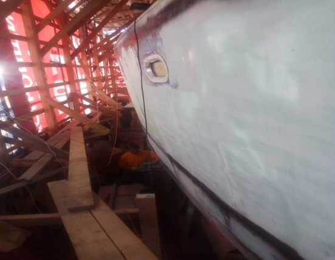
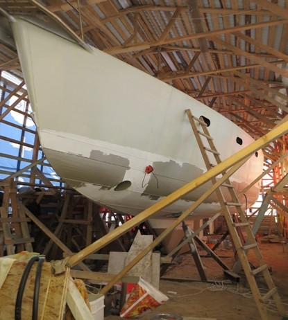
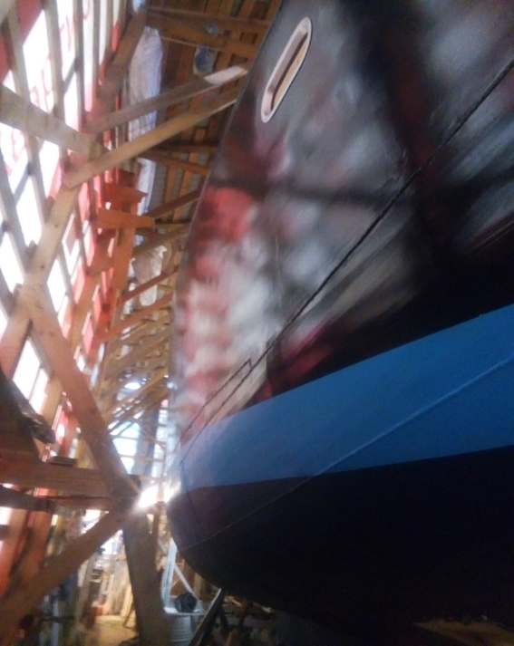
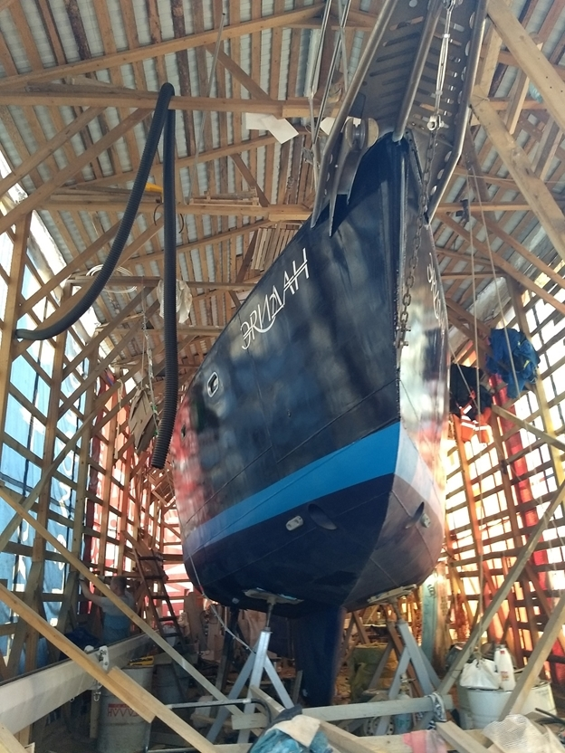
Надводный борт был покрыт синей полуглянцевой краской, палуба частично шаровой, частично белой. В краску палубы была добавлена нескользящая присадка.
В дальнейшем, уже при эксплуатации, палубу приходилось подкрашивать. Все же краска страдает от песка на подошвах или случайных повреждений твердыми предметами.
Часть палубы перед капом мы выровняли шпаклевкой и положили рейку из дерева породы ироко. Из этой же породы сделали пайолы. Наблюдаем за поведением дерева.
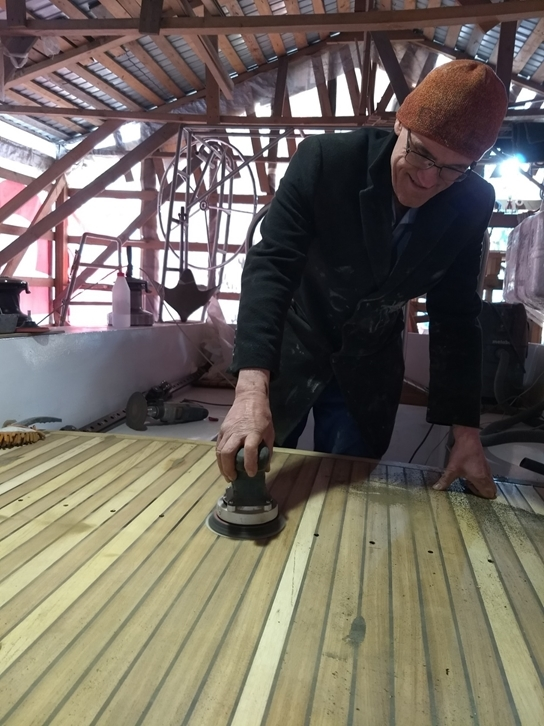
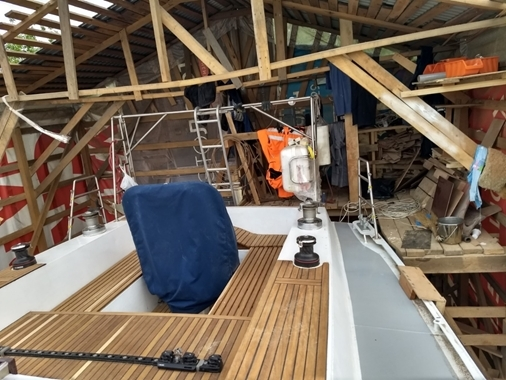
Подводный борт после двух навигаций нуждался в удалении необрастайки, нанесения грунта и снова окраски необрастайкой. Соблюдайте технологию!
Теплоизоляция
Сталь отлично проводит тепло, и корпус нуждается в хорошей теплоизоляции, чтобы в холод было комфортно, да и в жару тоже. Самый прогрессивный способ сегодня - это запенивание. Ни один теплоизолирующий слой не сможет лучше покрыть сложную конфигурацию внутренней поверхности лодки. Двухкомпонентная полиуретановая пена создает плотный толстый монолитный слой. Пена, кстати, плохо горит. При поджигании открытым огнем гореть начинает, но, если убрать источник пламени – гаснет.
Лучше не браться за эту операцию самим. Оборудование дорогое, лучше нанять специалистов. Работа вредная и тяжелая. Пеной были покрыты все стальные, заранее окрашенные поверхности примерно до уровня чуть ниже ватерлинии. Подготовка к процессу (многое закрыть от пены) и впоследствии срезание лишней пены были весьма трудоемкими занятиями. Но игра стоит свеч. Лодка получилась теплой. Пена еще и хороший изолятор звука.
Ниже несколько фото – так выглядела лодка после нанесения пены (ближе к форпику виден самоотливной цепной ящик.)
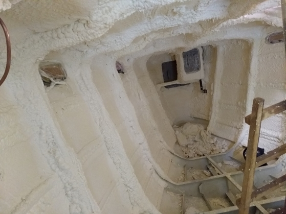
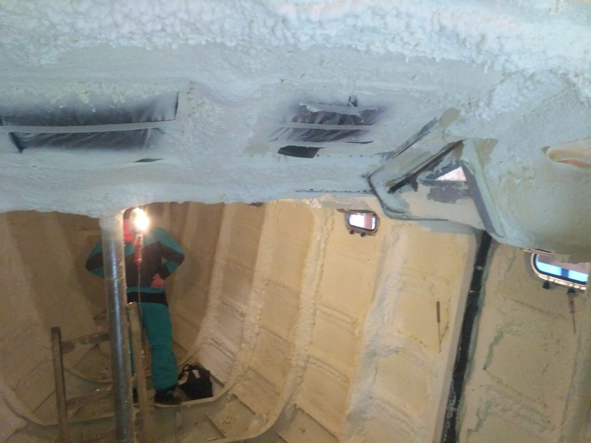
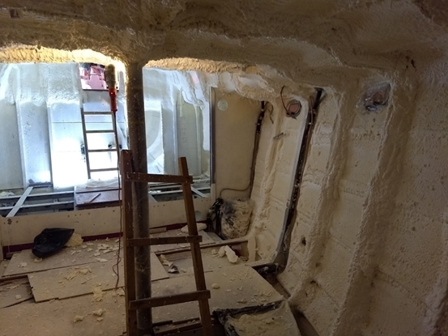
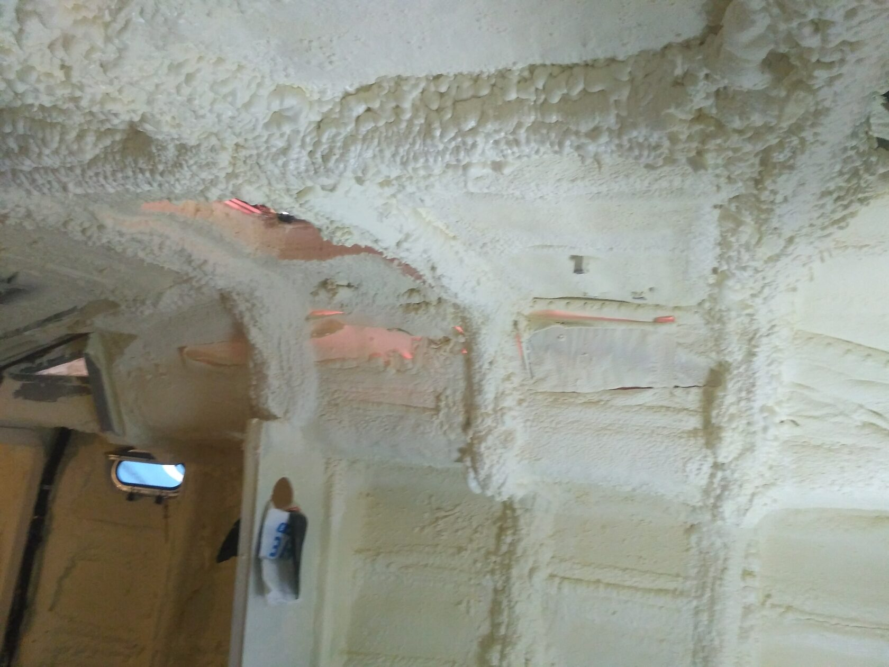
Прям пещера какая-то. А сколько еще работы! На следующем фото видно, что лишняя пена со шпангоутов срезана. На них будет установлена обрешетка для обшивки.
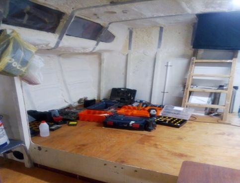
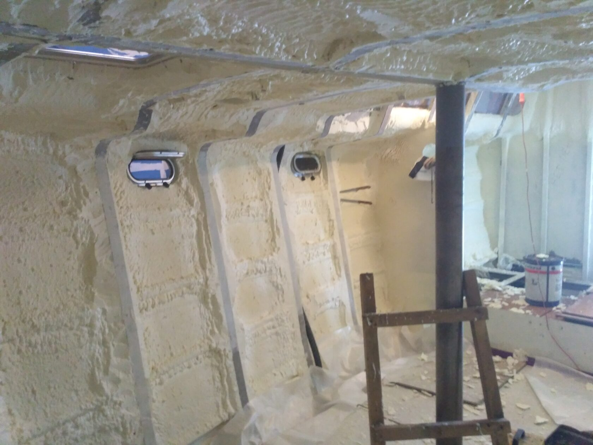
Запенивание - важный этап, производится после окраски и всех сварочных работ по корпусу. После него можно начинать внутреннюю отделку, изготовление мебели. В лодке уже можно работать зимой с применением обогревателей. Пена хорошо держит тепло.